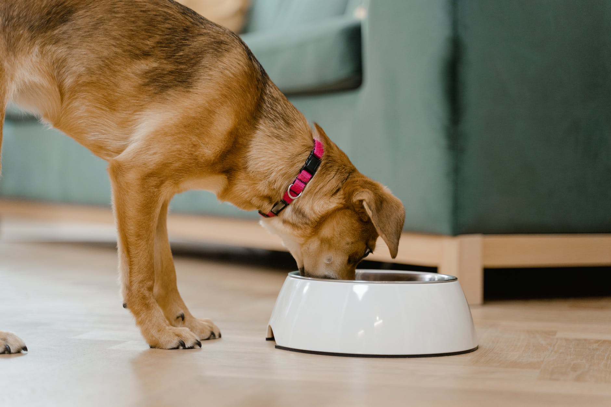
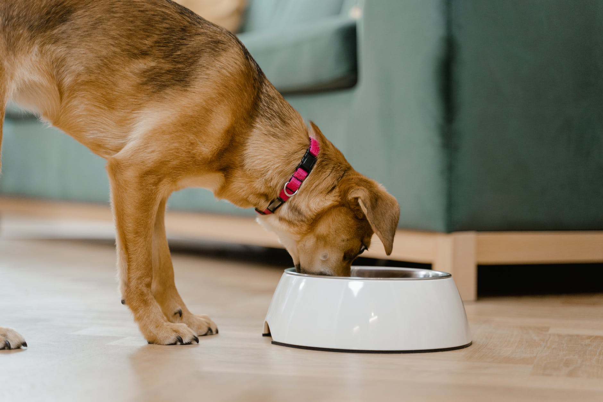

Arthrohard
Lab-V Arthrohard Preparat na
wsparcie stawów dla psa i kota
Arthrohard to dobrze przyswajalny suplement diety w formie syropu,
stworzony z myślą o zdrowiu stawów Twojego psa lub kota.
Co wyróżnia nasz preparat
Innowacyjny dodatek -
Czarciego Pazura
Zapewnia dodatkowe wsparcie w zwalczaniu stanów bólowych i zapalnych. Skoncentrowane składniki aktywne, opracowane we współpracy z lekarzami weterynarii, przynoszą szybkie i zauważalne efekty, szczególnie korzystne dla zwierząt z poważnymi problemami stawowymi.

Wygoda -
dwa sposoby podawania
1Bezpośrednio do pyszczka
2Zmieszany z karmą
 

Skuteczność -
skoncentrowana dawka
Tylko jedna porcja dziennie. To nie tylko wygoda, ale również gwarancja, że Twoje zwierzę otrzymuje wszystko, czego potrzebuje, aby cieszyć się zdrowiem i aktywnością na długo. Skorzystaj z zalet Arthrohard i zobacz różnicę w komforcie życia swojego zwierzęcia.

Skład w 5 ml
Co dają poszczególne składniki:
Siarczan glukozaminy
650 mgGlukozamina jest naturalnym składnikiem chrząstki. Dodatek glukozaminy przyczynia się do zwiększenia produkcji glikozaminoglikanów (m.in. siarczanu keratanu, heparanu, kwasu hialuronowego), które pomagają w odbudowie chrząstki, co jest szczególnie korzystne dla zwierząt ze zmianami zwyrodnieniowymi stawów.
Siarczan chondroityny
300 mgChondroityna, podobnie jak glukozamina, jest składnikiem chrząstki. Chondroityna pomaga zwalczać enzymy, które niszczą chrząstkę, a także pomaga chrząstce zatrzymać wodę, co jest ważne dla jej sprężystości i absorpcji wstrząsów.
Kwas hialuronowy
50 mgKwas hialuronowy jest kluczowym składnikiem płynu stawowego, który działa jak smar i amortyzator dla stawów. Suplementacja kwasem hialuronowym może pomóc w utrzymaniu prawidłowej objętości i konsystencji płynu stawowego.
Czarci pazur
250 mgCzarci pazur jest rośliną, która ma właściwości przeciwzapalne i przeciwbólowe. Może to pomóc zwierzętom, które doświadczają bólu i stanu zapalnego związanego z problemami ze stawami.
Witamina C
50 mgWitamina C jest potężnym przeciwutleniaczem, który może pomóc w ochronie stawów poprzez neutralizację wolnych rodników, które mogą uszkadzać chrząstkę. Ponadto, witamina C odgrywa ważną rolę w produkcji kolagenu, kluczowego składnika chrząstki.
MSM
250 mgMetylosulfonylometan, czyli MSM, to naturalny związek siarki, który pomaga w utrzymaniu zdrowych stawów poprzez zmniejszenie stanu zapalnego i bólu. MSM może również pomagać w produkcji kolagenu, co przyczynia się do zdrowia chrząstki stawowej.